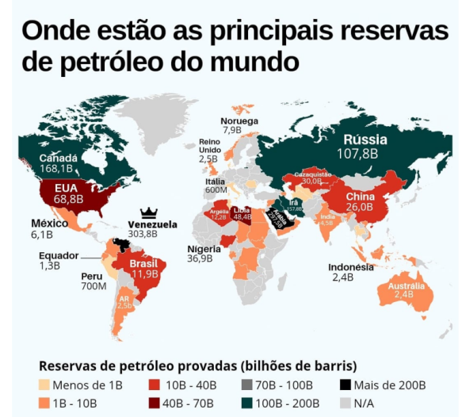

library(plotly)
# Create sample data with coordinates of some cities
cities <- data.frame(
name = c("Alfenas", "Varginha", "Poços de Caldas"),
lat = c(-21.42943530, -21.539957, -21.783731), # Latitude
lon = c(-45.95948212, -45.433960, -46.564178) # Longitude
)
# Create the interactive map
plot_ly(
data = cities,
lat = ~lat,
lon = ~lon,
type = 'scattergeo',
mode = 'markers+text',
text = ~name,
marker = list(size = 10, color = 'blue', opacity = 0.7),
textposition = "top center") %>%
layout(
title = "Municipalities of UNIFAL-MG campuses",
geo = list(
scope = 'south america',
showland = TRUE
)
)7 - Interactive maps with plotly
Objectives:
1. Learn about the potential of “plotly” for creating interactive maps
2. Create an interactive map with inserted data
3. Create an interactive map with imported data
Finally, we leave this last part of our course to introduce you to another “really cool” potential of
plotly for teaching and learning: the construction of interactive maps.Interactive maps allow you to view information by hovering your mouse over the data or by clicking on a map containing that data. Because it is a map, the information is obtained in specific geographic coordinates. This feature therefore makes it essential to have the longitude and latitude coordinates related to the geographic points you want to display.
Here is a simple example, locating the three municipalities in southern Minas Gerais where the campuses of the Federal University of Alfenas (UNIFAL-MG) are located.
To view the municipalities, zoom in on the image with your mouse. Note that the map starts in South America, a condition inserted in the code to facilitate the search for cities. Try placing a comment (#) to the left of the section “scope = …“, and the information will start from the mundi map. Now notice that when you hover your mouse over the municipalities, the proposed geographic coordinates are identified.
Now it’s your turn:
- Locate the geographic coordinates (longitude and latitude) of your hometown or that of a loved one. To do this, search the internet;
- Copy the code above and paste it into a new script;
- Replace the attributes “name”, “lat”, and “lon” in the
data.frameof the code with the ones you found. - Run the script and observe the selected municipality on the interactive map. Tip: if you selected a city outside South America, put a “#” before the line “scope = …“.
1 World oil production
Now imagine that instead of entering the data one by one, you can import the data from an online repository to build the map, as was done in the previous step. To illustrate this, let’s import a spreadsheet on global oil production. This category includes crude oil, shale oil, tar sands, condensates, and natural gas liquids (ethane, LPG, and naphtha separated from natural gas production).
At the same time, we will filter the imported data for the year 2014, as found in the Our World In Data database.

library(plotly)
# Example of dataframe with fictitious values
df <- read.csv("https://raw.githubusercontent.com/owid/owid-datasets/refs/heads/master/datasets/Oil%20production%20-%20Etemad%20%26%20Luciana/Oil%20production%20-%20Etemad%20%26%20Luciana.csv")
# Renaming columns to facilitate interpretation and plotting
names(df) <- c("Country", "Year", "Production.TeraWatt")
# Filtering data for the last year (2014)
df <- subset(df, Year == "2014")
head(df) Country Year Production.TeraWatt
82 Albania 2014 12.10759
165 Algeria 2014 1014.64045
224 Angola 2014 1035.41999
331 Argentina 2014 421.63374
351 Aruba 2014 1.65714
402 Australia 2014 281.78225# Creating the choropleth map with the color scale adjusted
library(plotly)
plot_ly(
data = df,
locations = ~Country,
locationmode = "country names",
z = ~Production.TeraWatt, # Variable that determines the colors
type = "choropleth",
colorscale = "RdBu") # other scales: # other scales: Viridis, Inferno, Blues, Cividis, Greens, ...Following the same logic as the previous map, if you hover your mouse over the countries, you will see the consumption identified in each one. Note that there is a sidebar showing the legend about the production quantity, in Note also that the “type” of the graph is now choropleth (and not scattergeo). In its simplest version, it only needs the standardized names of the countries. But it can also be done with a database that only has the geographical coordinates of latitude and longitude.
To help with this, here are two useful links to geographic coordinate files, accessible via
R:In this case, any database on this subject would be welcome. In practice, this means being able to illustrate any educational content interactively on a map (e.g., production/export of raw materials, clinical observations, historical landmarks, etc.).